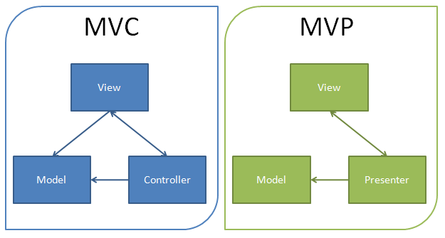
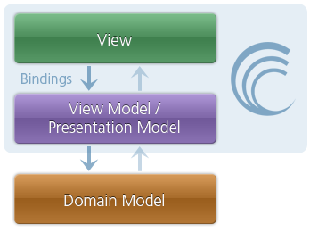

AngularJS in nutshell
Teamlead/health samurai team
@ waveaccess/choice-hospital-systems

(Presentation Model) framework
for single page applications (SPA)
Single Page Application?
Rich Client Application?
Standalone Application
vs
Distributed (Network) Application
Web Application
- Static Pages
- Request/Response Web Applications
- Rich Client & Services
Thin client
Rich client
Fat (Tick) client/application
(Presentation Model) framework
for SPA
Crafting application
Making Decisions
I think empty folders and empty files are two of the pivotal innovations in Rails that have encouraged us to write clean applications since the framework appeared.
DHH
Framework
Best Practices
by Inversion of Control
Presentation Model framework
for single page applications
GUI Architectures
Martin FowlerForms and Controls
Separated Presentation
Logical Model
MVP & MVC
Presentation Model (MVVM)
Data Bindings
Presentation Model framework
for single page applications
AngularJS
- modules
- controllers & scopes
- directives & data bindings
Modules & Dependency Injections
angular.module('a', [])
.service('aserv',...)
.directive('adir',...)
.controller(...)
.filter(...)
angular.module('b', ['a'])
.controller(function(adir){ // here is injection
//use adir
})
//...
Controllers, Scope & View
angular.module('app', [])
.controller('userCtrl',function($scope){
$scope.users = [{ name: 'Misko' }, {name: 'Voita'}, {name: 'Minar'}]
})
//view
html ng-app="app">
...
- {{ user.name }}
...
html>
scopes + controllers = Presentation Model

binded by directives to view
How it works?
Let's implement
Binding
Imperative :(
$('#input').on('input', function(){
$('#out').text($(this).value());
})
Organized & decoupled, but imperative
var DocumentRow = Backbone.View.extend({
tagName: "li",
className: "document-row",
events: {
"change .input": "input"
},
initialize: function() {
this.listenTo(this.model, "change", this.render);
}
render: function() {... }
input: function() {... }
});
Do it again & again?
Find more generic way (DRY)
Declarative
Just say "WHAT TO DO", not "HOW TO DO".
{{message}}
machine should do it for me!
Declarative programming
code design paradigm
Some parts should be
complex but generic
to simplify usage
(see compilers, parsers etc)
find (compile)
DIRECTIVES
//directives
function model(el, scope) {...}
function interpolate(el, scope) {...}
//complie document
var scope = {} //container for data
$("[ng-model]")
.each(function(el){ model(el, scope) })
$("*:contains('{{')")
.each(function(el){ interpolate(el, scope) })
Simple interpolation
function interpolate(el, scope) {
var template = el.innerHTML; //get & remember template
var prop = /{{(.+)}}/.exec(template)[1];
//imagine we have such method,
//calling callback when prop changed
scope.$watch(prop, function() {
console.log(scope)
el.innerHTML = template.replace('{{' + prop +'}}', scope[prop]);
})
}
ng-interpolate.js
function interpolate(el, scope) {
var template = el.innerHTML; //get & remember template
var prop = /{{(.+)}}/.exec(template)[1];
//imagine we have such method,
//calling callback when prop changed
scope.$watch(prop, function() {
console.log(scope)
el.innerHTML = template.replace('{{' + prop +'}}', scope[prop]);
})
}
Simple model directive
function model(el, scope) {
var model = el.getAttribute('ng-model')
$(el).on('input',function(){
var data = el.value;
scope.apply(function(){
scope[model] = data;
})
})
scope.watch(model, function(val) {
el.value = scope[model];
})
}
ng-input.js
// Scope
$watch: function(watchExp, listener,){
this.$$watchers.push(watchExp, listener)
}
$digest: function() {
var dirty = true;
while(dirty || iteration > limit) {
for $watcher in $$watchers {
var newValue = eval($watcher.watchExp)
if($watcher.oldValue != newValue){
$watcher.listener(newValue, oldValue)
}
}
}
}
rootScope.js
Directives + Scope = Bindings
Web components
Digest Loop